July to October 20262026 年 7 月至 10 月
The course produced more than thirty maps. The wiki page uses thirteen figures and one argument: the farmers with the least land and the least capacity to adapt farm in Taiwan's most volatile microclimates. This page shows how the story was written, where the direction changed, and which class map each wiki figure grew from. 課程做出三十多張地圖，wiki 頁面只用了十三張圖和一個論點：土地最少、最難調適的農民，正好在台灣氣候最不穩定的地方耕作。本頁說明故事怎麼寫出來、方向在哪裡轉彎，以及每張 wiki 圖是從哪張課堂地圖長出來的。
The story started on the 7 July whiteboard as three weights: farmers 30%, climate change 30%, biomanufacturing 40%. The shared Google Doc then went through Dr. Daniel's version, five student versions, a final and a cleaned version. The biggest change came from one piece of feedback. 故事最早出現在 7 月 7 日的白板上，是三個比重：農民 30%、氣候變遷 30%、生物製造 40%。之後共用 Google 文件經歷了 Dr. Daniel 的版本、五個學生版本、定稿和清理版。最大的改變來自一則回饋。
"Taiwan's climate data (from our CSV) shows that the annual mean temperature across the nation has risen from a mean of X degrees Celsius in 1991, to Y degrees Celsius in 2021." Summarise the data you looked at as one paragraph, with sentences like "the sunshine duration between year X and year Y increased from 230 to 500 hours per month".「台灣的氣候資料（來自我們的 CSV）顯示，全國年平均溫度從 1991 年的 X °C 上升到 2021 年的 Y °C。」把你看過的資料寫成一段，用像「某年到某年之間，日照時數從每月 230 小時增加到 500 小時」這樣的句子。
Two more things made the final text. A placeholder ("a difference of __ °C" between Kaohsiung and Yushan) stayed open for weeks until the data filled it: roughly 19 °C. And the field visit added a person: Ms. Chen, a natural farmer for 25 years, whose quote about Taiwan holding 11 of Earth's 12 soil classes now opens the climate chapter. 定稿還多了兩樣東西。一個空格（高雄到玉山「相差 __ °C」）空了好幾週，直到資料把它填上：約 19 °C。校外訪談則帶進了一個人：經營自然農法 25 年的陳女士，她說地球約 12 種土壤分類台灣就有 11 種，這句話現在是氣候章節的開頭。
Until 30 July the maps were about heat and rice. That day Jessie brought back what the team heard in outreach, including from Prof. Huang, and set three directions. 7 月 30 日以前，地圖的主題是高溫與稻米。那天 Jessie 帶回團隊在外部訪談中聽到的意見（包括黃教授），定下三個方向。
| Direction方向 | Where it ended up on the wiki在 wiki 上的落點 |
|---|---|
| Focus on precision agriculture聚焦精準農業 | The protection-before-stress argument that closes the climate chapter氣候章節結尾「逆境來臨前就要防護」的論點 |
| Find data on fertilizer and pesticide overuse by region找各地區肥料與農藥過度使用的資料 | The centralized vs. decentralized chapter: fertilizer table, world comparison, routing model「集中 vs. 分散」章節：肥料表、國際比較、路徑模型 |
| Overlay heat and humidity with crop-specific thresholds以作物別門檻疊加高溫與濕度 | Tomato as the target crop, with night-time warming in its flowering months以番茄為目標作物，加上開花月份的夜溫上升 |
The switch to tomato also rests on an interview with Director Wu Tzu-Hsien: Taiwan overproduces rice, and tomato is among its most valuable crops.改以番茄為目標，也根據吳主任（Director Wu Tzu-Hsien）的訪談：台灣稻米生產過剩，而番茄是經濟價值最高的作物之一。
Figure numbers as on the live page.圖號以線上頁面為準。
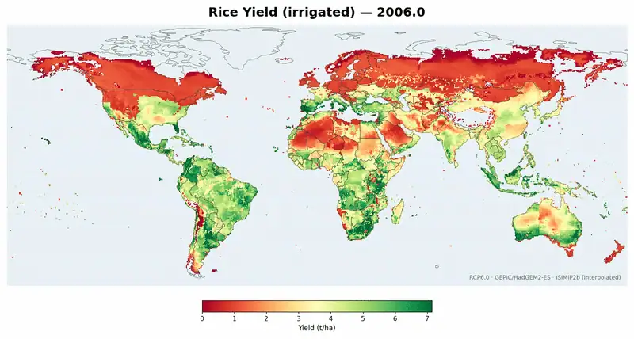
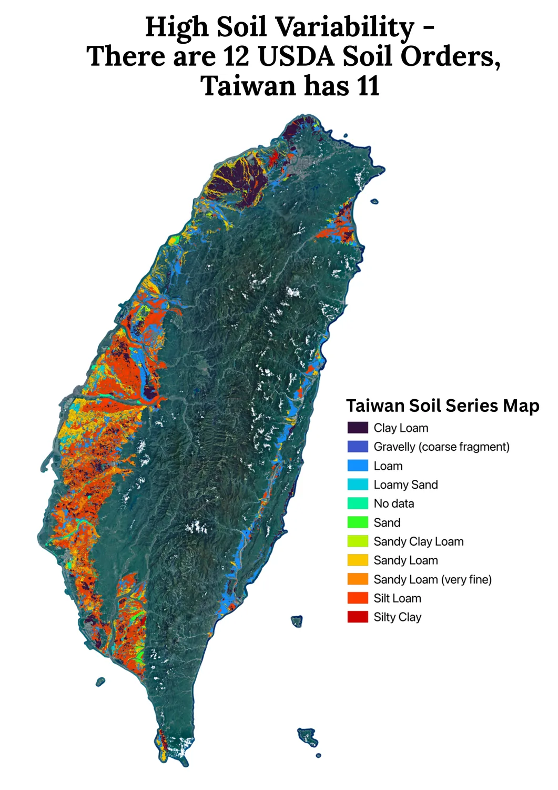
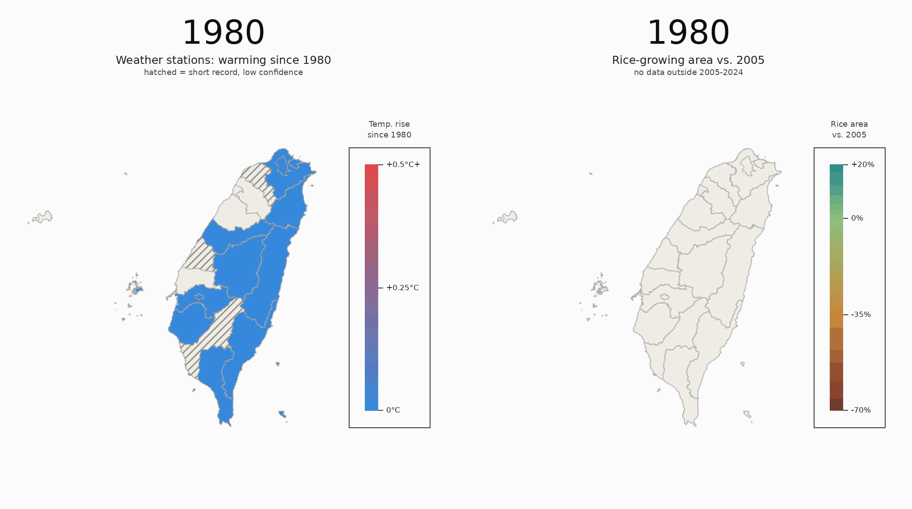
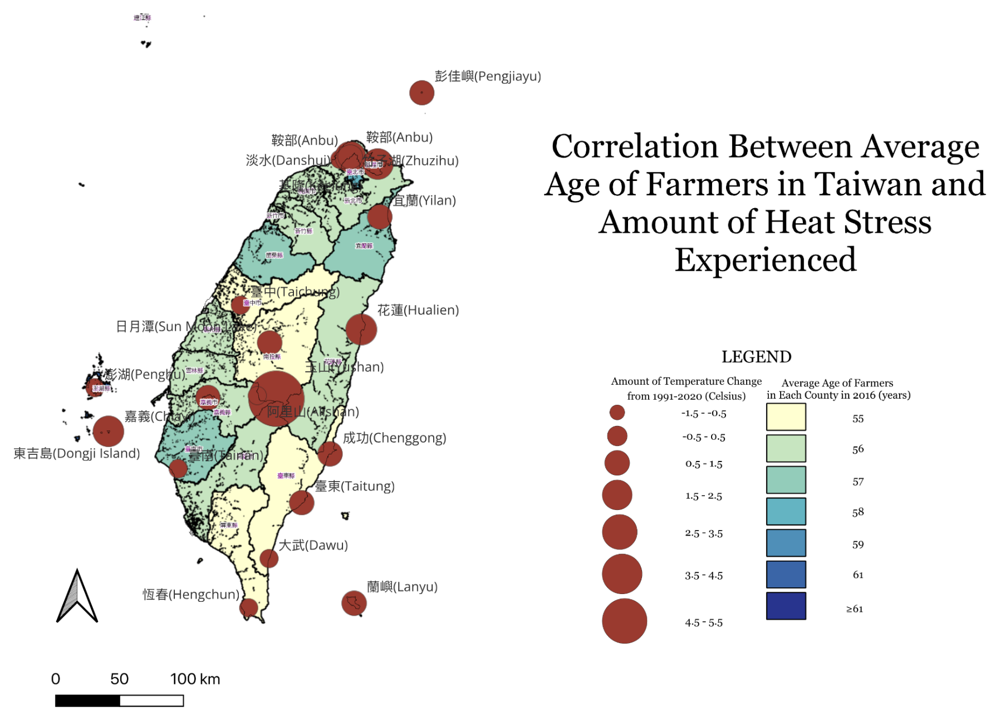
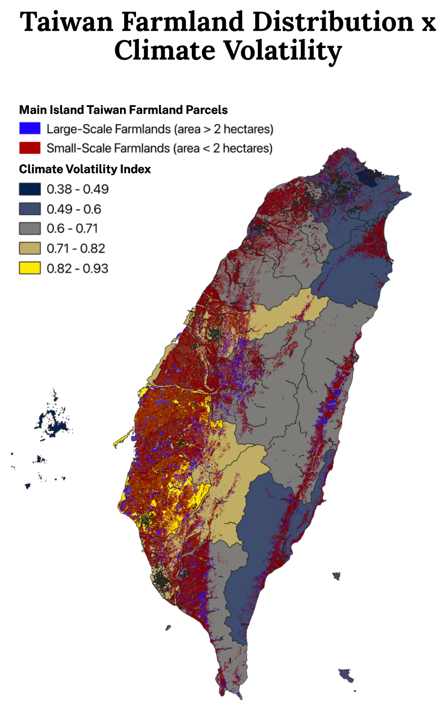
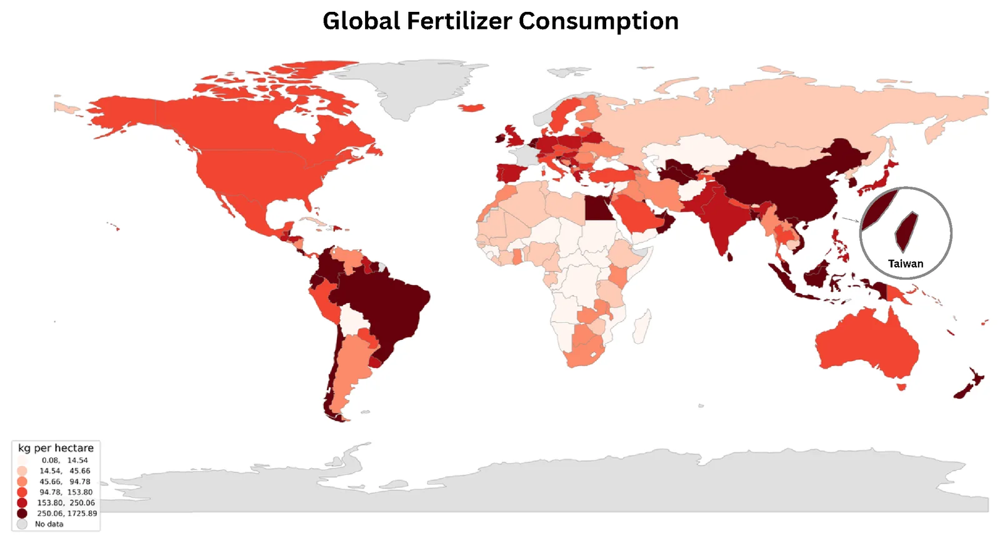
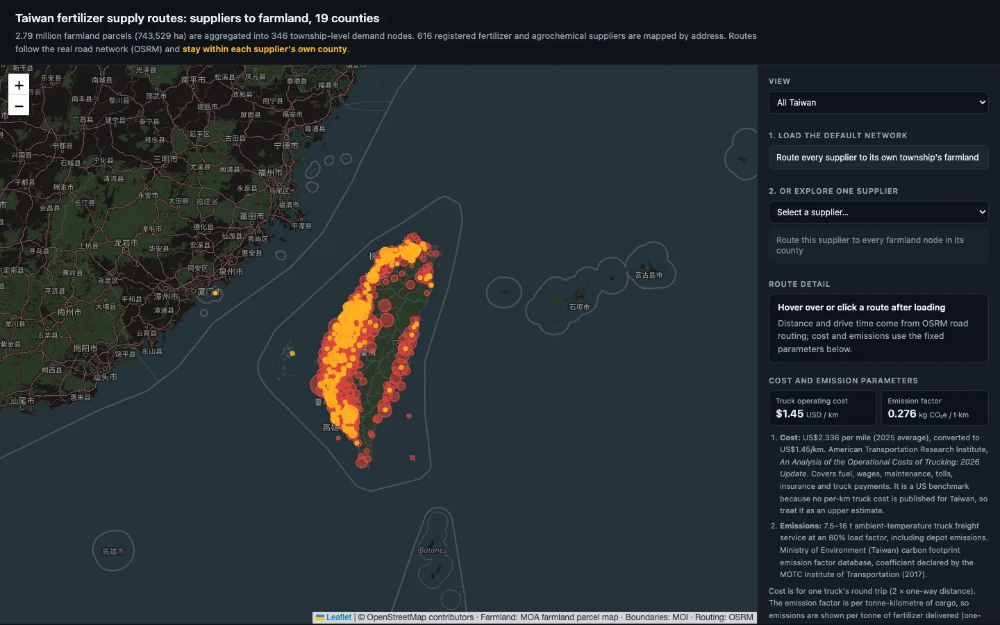
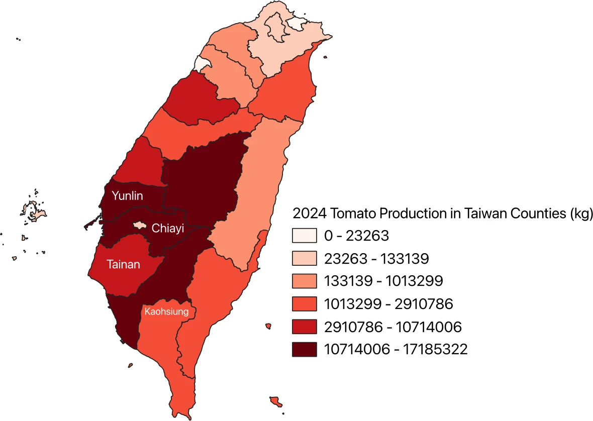
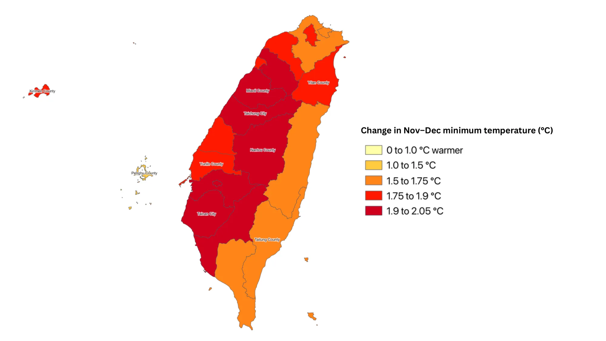
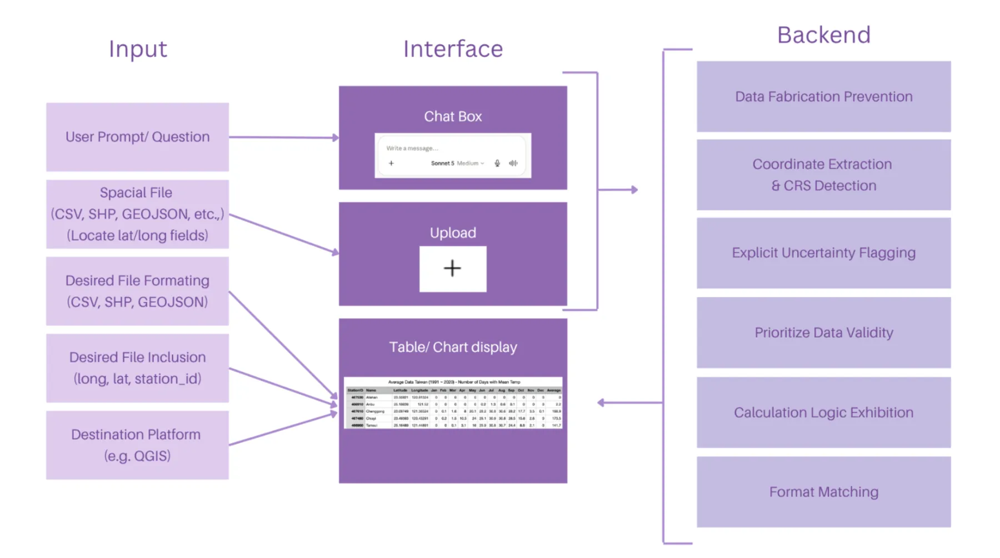
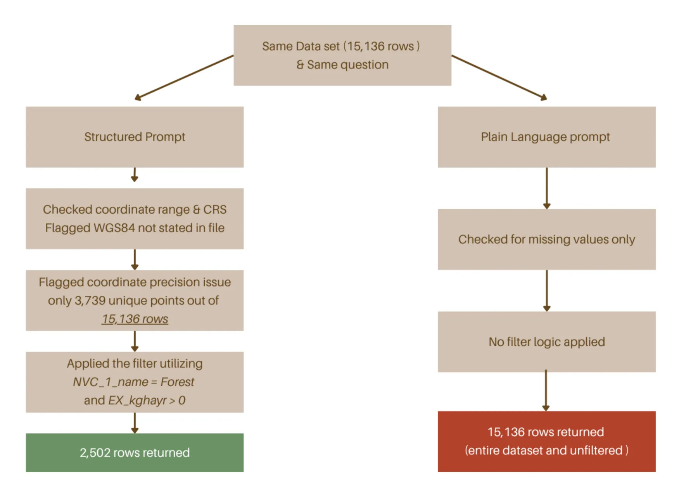
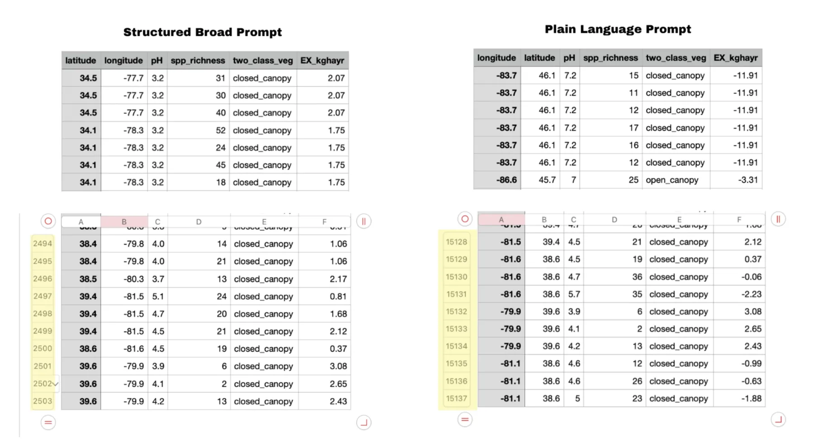
The structure the class began on 6 August with Marburg 2024 as the model, as it finally shipped:8 月 6 日以 Marburg 2024 為範本開始討論的架構，最後上線的樣子：
| Introduction引言 | Why maps: single interviews cannot tell a hardship from a pattern.為什麼需要地圖：單一訪談分不出是個案還是普遍現象。 |
| Problem statement問題陳述 | Global climate stress → Taiwan's climate and farmland → farmer demographics → centralized vs. decentralized supply.全球氣候逆境 → 台灣氣候與農地 → 農民人口結構 → 集中與分散的供應。 |
| Execution執行 | How GIS connects to the wet lab (light plate, plant assays), the dry lab (math model, business plan) and Human Practices.GIS 如何連結濕實驗（光照板、植物試驗）、乾實驗（數學模型、商業計畫）與人文實踐。 |
| Validation驗證 | Farmer interviews and the public forum, checked against the maps.農民訪談與公開論壇，回頭和地圖對照。 |
| Impact影響 | Tomato as the target crop.以番茄為目標作物。 |
| Contribution貢獻 | The beginner guide and the LLM data prompt, written for teams new to GIS.為初次接觸 GIS 的隊伍寫的入門指南與 LLM 資料提示詞。 |